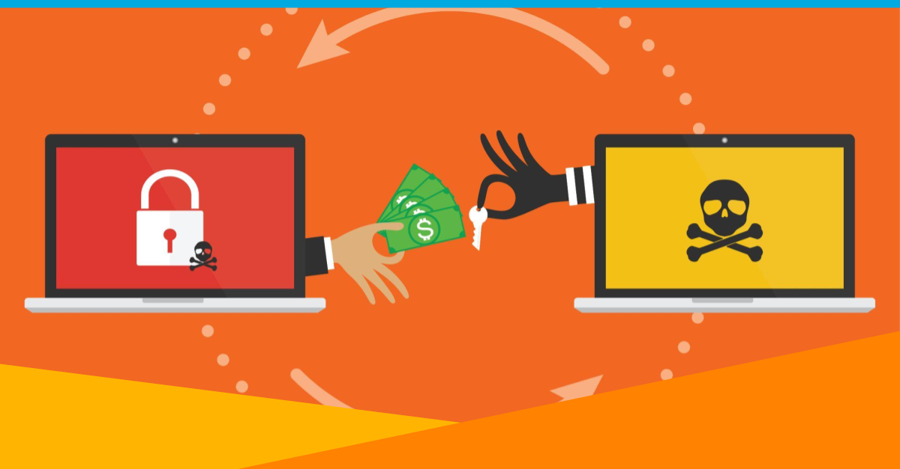
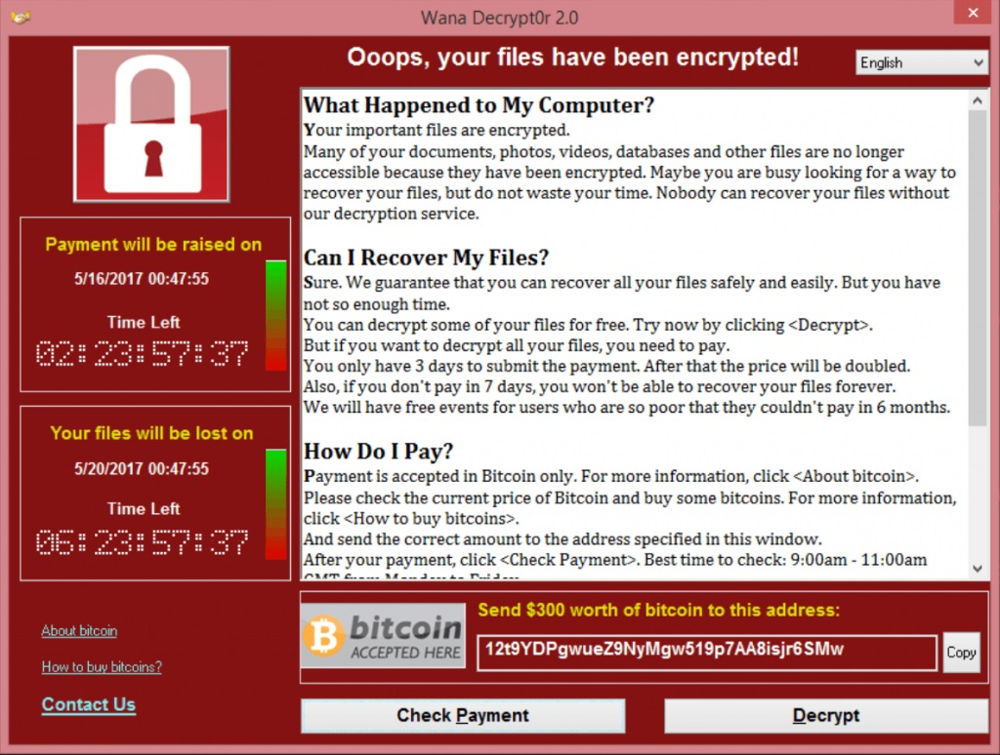
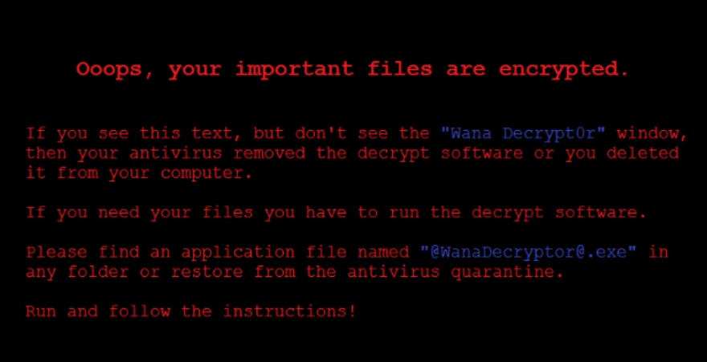
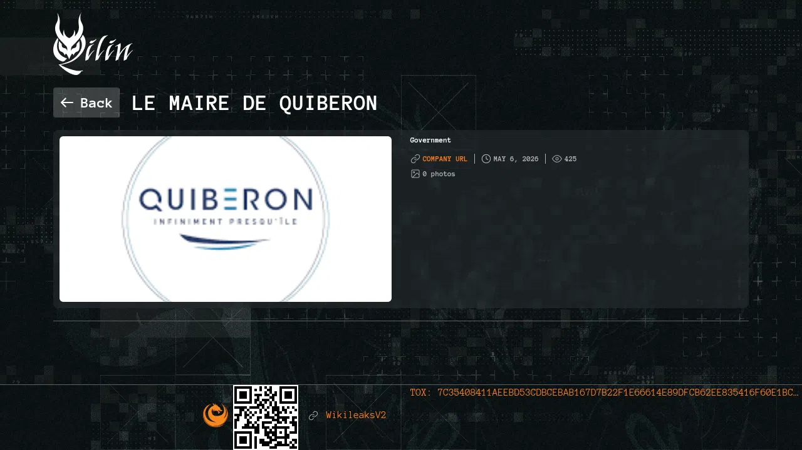

Le Ransomware as a Service (RaaS) est un modèle criminel où des cybercriminels développent un ransomware et le louent à d'autres personnes appelées "affiliés" pour mener des attaques. Ce phénomène est en pleine expansion et représente aujourd'hui l'une des menaces les plus sérieuses pour les entreprises et les collectivités à travers le monde. En France, les attaques se multiplient chaque année contre des hôpitaux, des mairies et des entreprises de toutes tailles.
Le RaaS fonctionne exactement comme un service commercial, à la différence que le produit est un logiciel malveillant. Les créateurs développent le ransomware, mettent en place l'infrastructure de paiement et proposent leur service sur le dark web. Les affiliés, qui n'ont aucune compétence technique particulière, paient un abonnement ou reversent une commission de 20 à 30% sur chaque rançon encaissée. En échange ils reçoivent le ransomware clé en main, un tableau de bord pour suivre leurs attaques et même un service support.
C'est comme une franchise : les créateurs fournissent la recette et les outils, les affiliés s'occupent du terrain. Avant il fallait être un expert pour créer un virus — aujourd'hui n'importe qui peut louer un ransomware pour quelques centaines de dollars et attaquer une entreprise sans aucune compétence technique.

WannaCry est un crypto-ransomware qui a fait figure d'épidémie mondiale en mai 2017. Il ciblait les ordinateurs sous Microsoft Windows en exploitant une faille baptisée EternalBlue, initialement développée par l'Agence de sécurité nationale américaine (NSA) et rendue publique par des hackers. En quelques heures, plus de 230 000 ordinateurs dans 150 pays ont été infectés. Des milliers d'hôpitaux britanniques ont été paralysés, des ambulances détournées, et les pertes mondiales sont estimées à 4 milliards de dollars. Une rançon en bitcoins était exigée — d'abord 300 dollars, puis 600 dollars si la victime ne payait pas dans les trois jours.


Dans la nuit du 20 au 21 août 2022, le Centre Hospitalier Sud Francilien a été ciblé par le groupe RaaS russophone LockBit 3.0. Tous les logiciels et systèmes d'information liés aux admissions des patients se sont retrouvés à l'arrêt. Une rançon de 10 millions de dollars a été réclamée. "Durant trois mois, nous avons été plongés dans le noir", résumait un an plus tard le directeur de l'hôpital. Cet exemple illustre parfaitement le fonctionnement du RaaS — LockBit 3.0 loue son ransomware à des affiliés qui mènent les attaques de manière autonome.
La municipalité bretonne de Quiberon a été victime du ransomware Qilin le 3 mai 2026, paralysant ses systèmes informatiques. Qilin est un groupe RaaS actif depuis 2022 qui loue son ransomware à des affiliés dans le monde entier. Cet exemple récent montre que même les petites collectivités locales sont des cibles privilégiées.

Face à la menace RaaS, plusieurs bonnes pratiques permettent de réduire les risques :
Sources : IT-Connect · CERT-FR · ANSSI · Kaspersky · Le Parisien
Outils : Google Alertes · Newsletter IT-Connect, Linkedin